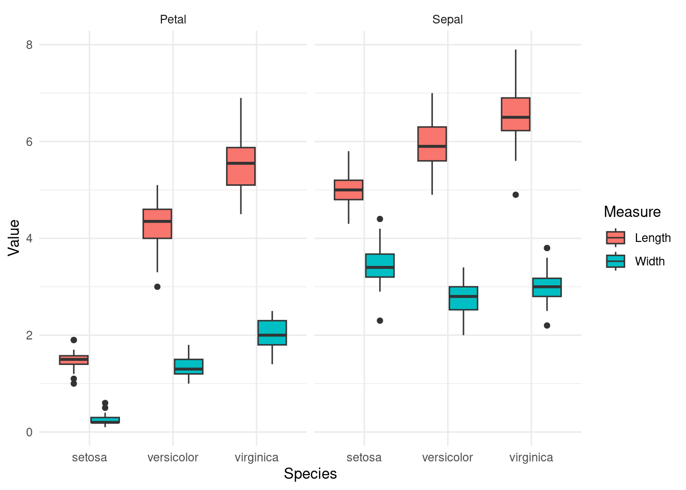

if(!require("tidyverse")) install.packages("tidyverse")
if(!require("htmlTable")) install.packages("htmlTable")
if(!require("haven")) install.packages("haven")
if(!require("DT")) install.packages("DT")5 long vs wide
Long Form과 Wide Form은 데이터를 구성하는 두 가지 다른 방식으로, 각각의 특징과 장단점을 가지고 있습니다. 어떤 형식이 더 적합한지는 분석의 목적과 데이터의 특성에 따라 달라집니다.보건학에서 검사 A, B, C별 수치를 예시로 Long Form과 Wide Form의 장단점을 설명하면 다음과 같습니다.
- Long Form
구조: 각 행이 개별 관측치를 나타내고, 여러 검사 결과는 하나의 열에 “검사 종류”와 “검사 결과” 변수로 표현됩니다. 즉, 각 개인에 대해 여러 행이 존재할 수 있습니다.
| ID | 검사 종류 | 검사 결과 |
|---|---|---|
| 1 | A | 10 |
| 1 | B | 20 |
| 1 | C | 30 |
| 2 | A | 15 |
| 2 | B | 25 |
| 2 | C | 35 |
장점:
- 데이터 추가 및 수정이 용이: 새로운 검사 항목 (예: 검사 D) 추가 시, 새로운 행을 추가하기만 하면 됩니다. 다양한 통계 분석에 적합: 반복 측정 ANOVA, 혼합 효과 모델 등 다양한 통계 분석에 적합한 형태입니다. 데이터 저장 공간 효율성: Wide Form에 비해 데이터 중복이 적어 저장 공간을 효율적으로 사용할 수 있습니다.
단점:
- 데이터 구조 파악이 어려울 수 있음: 특히 검사 종류가 많아질수록 데이터 구조를 직관적으로 파악하기 어려워질 수 있습니다. 특정 분석에 비효율적: 일부 분석 (예: 상관관계 분석)에서는 Wide Form이 더 효율적일 수 있습니다.
- Wide Form
구조: 각 행이 개별 관측치를 나타내고, 각 검사 결과는 별도의 열에 저장됩니다.
| ID | 검사A | 검사B | 검사C |
|---|---|---|---|
| 1 | 10 | 20 | 30 |
| 2 | 15 | 25 | 35 |
장점:
- 데이터 구조 파악이 용이: 각 검사 결과를 별도의 열로 표현하여 데이터 구조를 직관적으로 파악하기 쉽습니다. 특정 분석에 효율적: 상관관계 분석 등 특정 분석에 Wide Form이 더 효율적일 수 있습니다.
단점:
- 데이터 추가 및 수정이 번거로움: 새로운 검사 항목 추가 시, 새로운 열을 추가해야 합니다. 데이터 저장 공간 비효율성: Long Form에 비해 데이터 중복이 많아 저장 공간을 비효율적으로 사용할 수 있습니다. 일부 통계 분석에 부적합: 반복 측정 ANOVA, 혼합 효과 모델 등 다양한 통계 분석에 Long Form이 더 적합합니다.
보건학 연구에서 Long Form 활용 예시:
- 시간에 따른 변화 분석: 특정 환자 집단의 검사 A, B, C 결과를 시간에 따라 추적하여 변화 양상을 분석할 때 유용합니다.
- 집단 간 비교: 환자 집단 간 (예: 치료군 vs. 대조군) 검사 A, B, C 결과를 비교 분석할 때 유용합니다.
- 예측 모델 개발: 검사 A, B, C 결과를 이용하여 질병 발생 가능성을 예측하는 모델을 개발할 때 유용합니다.
보건학 연구에서 Wide Form 활용 예시:
- 상관관계 분석: 검사 A, B, C 결과 간의 상관관계를 분석할 때 유용합니다.
- 군집 분석: 환자들을 검사 A, B, C 결과를 기반으로 유사한 특징을 가진 군집으로 분류할 때 유용합니다.
결론: Long Form과 Wide Form은 각자의 장단점을 가지고 있으며, 연구 목적과 데이터 특성에 따라 적절한 형태를 선택해야 합니다. 보건학 연구에서는 일반적으로 Long Form이 더 많이 사용되지만, Wide Form이 더 적합한 경우도 있습니다.
데이터 추가에서의 long vs wide 폼
Long Form에서 데이터를 추가하는 것은 간단합니다. 새로운 행을 추가하고, ID, 검사 종류, 검사 결과 열에 해당하는 값을 입력하면 됩니다. 예를 들어, ID가 3인 사람의 검사 A 결과가 12이고, 검사 B 결과가 23이라면 다음과 같이 행을 추가하면 됩니다.
| D | 검사 종류 | 검사 결과 |
|---|---|---|
| 1 | A | 10 |
| 1 | B | 20 |
| 1 | C | 30 |
| 2 | A | 15 |
| 2 | B | 25 |
| 2 | C | 35 |
| 3 | A | 12 |
| 3 | B | 23 |
| 4 | D | 40 |
Wide Form에서 데이터를 추가하는 것은 조금 더 복잡합니다. 먼저, 새로운 행을 추가하고 ID 열에 해당하는 값을 입력합니다. 그런 다음, 해당 ID에 대해 수행한 검사 결과를 해당 열에 입력합니다. 만약 해당 ID에 대해 수행하지 않은 검사가 있다면 해당 열에 NA 값을 입력해야 합니다. 예를 들어, ID가 3인 사람의 검사 A 결과가 12이고, 검사 B 결과가 23이라면 다음과 같이 행을 추가해야 합니다.
| ID | 검사 A | 검사 B | 검사 C |
|---|---|---|---|
| 1 | 10 | 20 | 30 |
| 2 | 15 | 25 | 35 |
| 3 | 12 | 23 | NA |
만약 새로운 검사 항목이 추가된다면, Wide Form에서는 모든 행에 새로운 열을 추가하고, 해당 검사를 수행하지 않은 사람들에 대해서는 NA 값을 입력해야 합니다. 예를 들어, 검사 D 항목이 추가되고, ID가 1인 사람만 검사 D를 수행하여 결과가 40이라면 다음과 같이 Wide Form을 수정해야 합니다.
| ID | 검사 A | 검사 B | 검사 C | 검사 D |
|---|---|---|---|---|
| 1 | 10 | 20 | 30 | 40 |
| 2 | 15 | 25 | 35 | NA |
| 3 | 12 | 23 | NA | NA |
5.1 IRIS data 를 이용한 실습
이 튜토리얼에서는 iris 데이터를 사용하여 tidyr 패키지의 pivot_longer()와 pivot_wider()를 설명합니다. 이 두 함수는 데이터를 길거나 넓은 형식으로 변환할 수 있게 도와줍니다. pivot_longer()는 데이터를 길게(행을 더 추가) 만들고, pivot_wider()는 데이터를 넓게(열을 더 추가) 만듭니다.
- pivot_longer(): 여러 열을 하나의 열로 변환하기
- Sepal.Length, Sepal.Width, Petal.Length, Petal.Width를 길게 변환합니다.
head(iris) Sepal.Length Sepal.Width Petal.Length Petal.Width Species
1 5.1 3.5 1.4 0.2 setosa
2 4.9 3.0 1.4 0.2 setosa
3 4.7 3.2 1.3 0.2 setosa
4 4.6 3.1 1.5 0.2 setosa
5 5.0 3.6 1.4 0.2 setosa
6 5.4 3.9 1.7 0.4 setosairis_long <- iris %>%
pivot_longer(cols = c(Sepal.Length, Sepal.Width, Petal.Length, Petal.Width),
names_to = "Measurement",
values_to = "Value")
head(iris_long)# A tibble: 6 × 3
Species Measurement Value
<fct> <chr> <dbl>
1 setosa Sepal.Length 5.1
2 setosa Sepal.Width 3.5
3 setosa Petal.Length 1.4
4 setosa Petal.Width 0.2
5 setosa Sepal.Length 4.9
6 setosa Sepal.Width 3 설명:
- pivot_longer() 함수는 Sepal.Length, Sepal.Width, Petal.Length, Petal.Width 열들을 하나의 “Measurement”라는 열로 합치고, 각 측정값은 “Value”라는 열에 들어갑니다. 기존에 150행이었던 데이터는 변환 후 600행이 되었습니다.
- pivot_wider(): 길어진 데이터를 다시 넓은 형식으로 변환
- Species별로 다시 열을 복구합니다.
iris_wide <- iris_long %>%
pivot_wider(names_from = "Measurement",
values_from = "Value")
# 결과 확인
head(iris_wide)# A tibble: 3 × 5
Species Sepal.Length Sepal.Width Petal.Length Petal.Width
<fct> <list> <list> <list> <list>
1 setosa <dbl [50]> <dbl [50]> <dbl [50]> <dbl [50]>
2 versicolor <dbl [50]> <dbl [50]> <dbl [50]> <dbl [50]>
3 virginica <dbl [50]> <dbl [50]> <dbl [50]> <dbl [50]> pivot_wider(): 길어진 데이터를 다시 넓은 형식으로 변환
- Species별로 다시 열을 복구하기 합니다.
5.2 Pivot longer에서 data 변환
이제 pivot_longer()를 사용할 때, 여러 열을 한 번에 다루면서 변수명을 결합해야 하는 상황을 예시 데이터를 통해 설명하겠습니다. 예시 데이터는 iris 데이터에 Sepal과 Petal 측정값(길이와 너비)을 사용하고, 이를 새로운 형태로 변환하여 길이와 너비를 변수로 분리해보겠습니다.
iris_longer_example <- iris %>%
pivot_longer(
cols = c(Sepal.Length, Sepal.Width,
Petal.Length, Petal.Width), # 여러 열 선택
names_to = c("Part", "Measure"), # 두 개의 새로운 변수로 나눔
names_sep = "\\.", # 열 이름의 구분자가 "."임을 지정
values_to = "Value" # 측정값을 저장할 열 이름
)
head(iris_longer_example)# A tibble: 6 × 4
Species Part Measure Value
<fct> <chr> <chr> <dbl>
1 setosa Sepal Length 5.1
2 setosa Sepal Width 3.5
3 setosa Petal Length 1.4
4 setosa Petal Width 0.2
5 setosa Sepal Length 4.9
6 setosa Sepal Width 3 - names_to = c(“Part”, “Measure”): 여기서는 names_to에서 두 개의 새로운 변수를 생성했습니다. 첫 번째는 “Part” (Sepal 또는 Petal), 두 번째는 “Measure” (길이 또는 너비).
- names_sep = “\.”: 열 이름을 분리하기 위해 구분자로 .을 사용했습니다. 즉, Sepal.Length는 Part = “Sepal”, Measure = “Length”로 분리됩니다.
- cols = c(Sepal.Length, Sepal.Width, Petal.Length, Petal.Width): 변환할 여러 열을 선택하여 한 번에 변환합니다.
이렇게 변환하면 iris_longer_example 데이터는 Part, Measure, 그리고 Value라는 세 개의 주요 열을 가지게 됩니다.
5.3 Long form 에서의 group_by
pivot_longer()를 사용하여 데이터를 긴 형식으로 변환하는 것의 주요 장점은 데이터 분석과 요약 작업이 더욱 효율적이 된다는 점입니다. 특히 group_by()와 summarise() 같은 함수와 결합하면 반복문을 사용하지 않고도 여러 그룹에 대한 계산을 쉽게 할 수 있습니다. 이 방식이 중요한 이유를 몇 가지 장점과 함께 설명하겠습니다.
1. 반복문 없이 쉽게 그룹화 및 요약 가능
긴 형식으로 변환된 데이터는 열(column)에 변수가 저장되어 있어, 여러 변수나 그룹별로 쉽게 요약할 수 있습니다. 예를 들어, Sepal.Length와 Sepal.Width라는 열이 있으면 이를 각각 따로 그룹화하고 요약해야 할 수 있지만, 긴 형식에서는 Part와 Measure로 통합되었기 때문에 반복문 없이도 쉽게 요약할 수 있습니다.
1). Wide Form (넓은 형식)에서 통계 요약
넓은 형식에서는 각 변수가 서로 다른 열에 있으므로, 각 열에 대해 개별적으로 요약을 해야 합니다. 보통 여러 열에 대해 요약할 때 summarise()를 여러 번 써야 하거나, 각 변수에 대해 명시적으로 작업해야 합니다.
# Wide form에서는 각 변수별로 요약해야 함
iris_wide_summary <- iris %>%
group_by(Species) %>%
summarise(
Sepal.Length.Mean = mean(Sepal.Length, na.rm = TRUE),
Sepal.Width.Mean = mean(Sepal.Width, na.rm = TRUE),
Petal.Length.Mean = mean(Petal.Length, na.rm = TRUE),
Petal.Width.Mean = mean(Petal.Width, na.rm = TRUE)
)
# 결과 확인
print(iris_wide_summary)# A tibble: 3 × 5
Species Sepal.Length.Mean Sepal.Width.Mean Petal.Length.Mean Petal.Width.Mean
<fct> <dbl> <dbl> <dbl> <dbl>
1 setosa 5.01 3.43 1.46 0.246
2 versico… 5.94 2.77 4.26 1.33
3 virgini… 6.59 2.97 5.55 2.03 5.3.1
2. Long Form (긴 형식)에서 통계 요약
긴 형식으로 변환한 데이터는 모든 변수가 하나의 열에 통합되어 있으므로, 그룹화한 뒤 간단히 요약할 수 있습니다. 변수명이 하나의 열에 들어가 있어 더 유연하게 처리할 수 있습니다.
# iris_longer_example 데이터에서 'Part'와 'Measure'별 평균 구하기
iris_summary <- iris_longer_example %>%
group_by(Species, Part, Measure) %>%
summarise(Mean_Value = mean(Value, na.rm = TRUE))
# 결과 확인
print(iris_summary)# A tibble: 12 × 4
# Groups: Species, Part [6]
Species Part Measure Mean_Value
<fct> <chr> <chr> <dbl>
1 setosa Petal Length 1.46
2 setosa Petal Width 0.246
3 setosa Sepal Length 5.01
4 setosa Sepal Width 3.43
5 versicolor Petal Length 4.26
6 versicolor Petal Width 1.33
7 versicolor Sepal Length 5.94
8 versicolor Sepal Width 2.77
9 virginica Petal Length 5.55
10 virginica Petal Width 2.03
11 virginica Sepal Length 6.59
12 virginica Sepal Width 2.97 5.3.2 Wide Form과 Long Form 요약의 차이점
코드 복잡성:
Wide Form: 각 변수를 개별적으로 명시해야 하므로 코드가 더 길고 복잡해집니다. 요약하려는 열이 많을수록 더 많은 요약 함수 호출이 필요합니다.
Long Form:
pivot_longer()로 데이터를 변환하면 여러 변수들을group_by()와summarise()에서 한 번에 처리할 수 있어 훨씬 간단한 코드로 요약할 수 있습니다.
확장성:
Wide Form: 열의 개수가 늘어날수록 코드가 더 복잡해집니다. 각 변수에 대해 별도의 요약을 해야 하므로, 새로운 변수가 추가되면 모든 요약 코드를 다시 작성해야 합니다.
Long Form: 긴 형식에서는 변수를 하나의 열로 합쳤기 때문에 변수가 몇 개 추가되더라도
group_by()와summarise()로 한 번에 처리할 수 있습니다.
유연성:
Wide Form: 변수별로 개별 처리가 필요하므로, 각 변수에 대해 개별적인 계산을 해야 합니다.
Long Form: 여러 변수를 한 번에 처리할 수 있기 때문에
facet_wrap(),ggplot2를 사용한 시각화, 통계 분석 등에서 유연하게 활용할 수 있습니다.
사용 목적:
Wide Form: 개별 변수에 대해 명확하게 작업해야 할 때 유용합니다. 하지만 데이터의 구조가 매우 복잡할 때는 비효율적일 수 있습니다.
Long Form: 여러 변수를 하나의 열에 넣고, 그룹화, 요약, 시각화 등을 유연하게 처리할 때 이상적입니다. 특히 반복 작업이 필요 없는 장점이 큽니다.
데이터 처리의 유연성 증가
긴 형식(long form)은 다양한 변수 간의 관계를 탐색하는 데 유리합니다. pivot_longer()를 사용하여 여러 열을 하나로 합치면, 여러 변수 간의 분석이 더 쉬워집니다. 이를 통해 데이터 시각화, 통계적 분석, 그룹별 처리 등에서 매우 유연하게 사용할 수 있습니다. ggplot2 에 대해서는 시각하 챕터에서 공부합니다.
# ggplot2로 각 Part와 Measure에 따른 값 분포 시각화
ggplot(iris_longer_example, aes(x = Species, y = Value, fill = Measure)) +
geom_boxplot() +
facet_wrap(~ Part) +
theme_minimal()
5.3.2.1 장점:
여러 변수를 그룹화하여 한 번에 시각화할 수 있습니다.
긴 형식 데이터를 사용하면, 변수들을 쉽게
facet_wrap()이나color등의 옵션으로 그룹화하여 다양한 시각적 분석이 가능합니다.